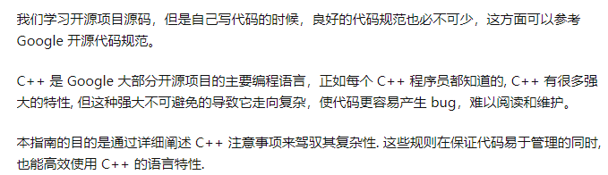

CPlusPlusThings
CPlusPlusThings 是国人开源一个 C++ 学习项目。它系统地将 C++ 学习分为了【基础进阶】、【实战系列】、【C++2.0 新特性】、【设计模式】和【STL 源码剖析】、【并发编程】、【C++ 惯用法】、【学习课程】、【工具】、【拓展】。
作为一个全面系统的 C++ 学习项目，CPlusPlusThings 是优秀的，它合理地安排了 10 Days 的实战部分，在实战中了解语法和函数用法，唯一不足的是，在注释部分有些不尽人意，对部分新手程序员并不是很友好
GitHub 地址
MyTinySTL
当你学习完 C++ 的“书本”知识后，是不是有些手痒了呢？MyTinySTL 这个注释详细、实践夯实基础的项目便是你 C++ 学习之旅的下一站。作为新手练习用途，MyTinySTL 的作者 Alinshans 用 C++11 重新复写了一个小型 STL（容器库＋算法库）。代码结构清晰规范、包含中文文档与注释，并且自带一个简单的测试框架，适合 C++ 新手来实践一番。
GitHub 地址
calculator
微软开源的 Windows 系统预装的计算器工具。该工具提供标准、科学、程序员计算器的功能，以及各种度量单位和货币之间的转换功能。快来看看微软工程师编写的代码吧！学习大厂的编码规范、项目结构之类的，提高阅读源码的能力。英文的项目且没有讲解部分，需要通过阅读源码学习，难度较高。
GitHub 地址
Tinytetris
Tinytetris 是一个用 C++ 编写的终端版俄罗斯方块游戏。它提供了两个版本的源码，分为注释版和库版，注释较多易于理解和学习。
GitHub 地址
Google开源代码规范

GitHub 地址
现代 C++：modern-cpp-tutorial
modern-cpp-tutorial 是现代 C++ 教程，它的目的是提供关于现代 C++（2020 年前）的相关特性的全面介绍。除了介绍了代码之外，它还尽可能简单地介绍了其技术需求的历史背景，这对理解为什么会出现这些特性提供了很大的帮助。